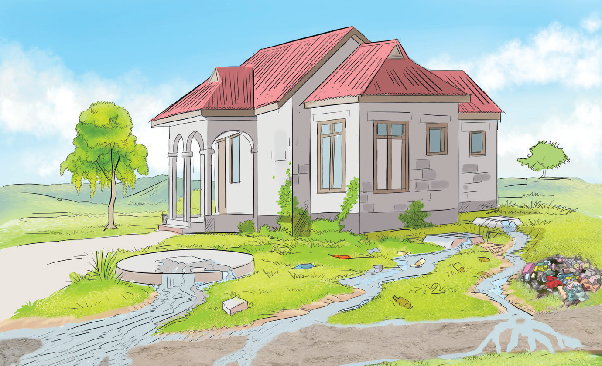

Angalia Kielelezo namba 7, kisha jibu maswali.

Kielelezo namba 7: Uchafuzi wa mazingira
Maswali
1. Ni vitendo vipi katika Kielelezo namba 7 vinahatarisha usalama wa mazingira?
2. Toa mapendekezo ya namna ya kuepuka au kupunguza uchafuzi wa mazingira.